2022
A SUBSEQUENT MATTER OF SUBSTANCE
a speculative play about material choreography in deep time
The project examines circulation as a way to explore the future repercussions of architecture within the community of Boston’s Strand Theatre.
CONTEXT
Core II Studio, Massachusetts Institute of Technology
LOCATION
Strand Theatre, Boston
SOFTWARE + TOOLS
Rhinoceros 3D, Photoshop, Illustrator, LiDAR scanning
COLLABORATOR
L. Sloan Aulgur
SUPERVISORS
Silvia Illia-Sheldahl, Cristina Parreño
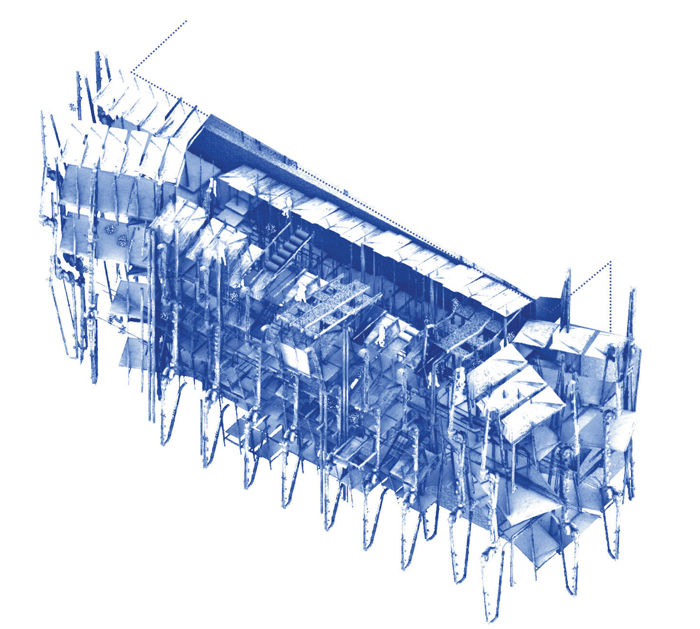
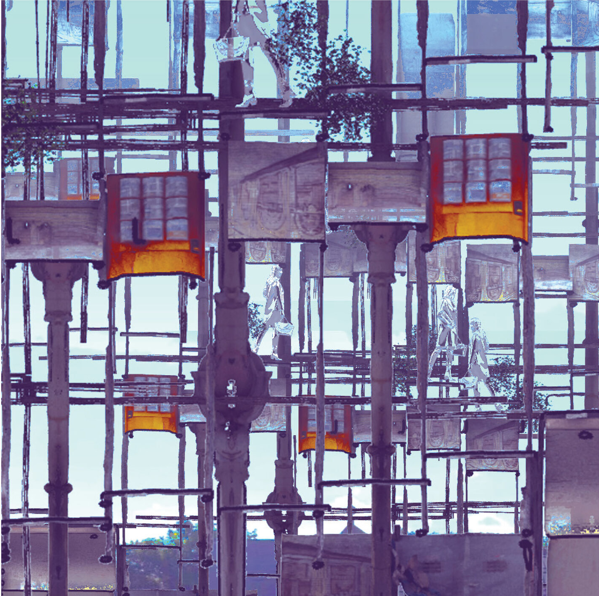
Today the the Strand Theatre sits proud in the heart of Dorchester- Built in 1918, the theatre has been a
part of the community for over 100 years. If time is of the essence in the theatre itself, the same should
apply to the building and the residence beyond. This performance proposes each phase of the building is just
as important as the last. The past, the present, the future, and so on. The scene sets in the year 2050- as
the BPDA has predicted the year to be of noticeable change in the greater Boston area, Sea levels will have
continued to rise and the functions of our buildings will begin to change. Boston will have begun constructing
retaining walls, designing for flood zones and reimagining the infrastructure. A large portion of the land
mass will begin to experience the ebbs and flows of water rise. In the cases of larger coastal storms, Boston
buildings are already being advised to prepare for 3-5’ feet of water to invade the built environment. Those
higher in elevation would be bought more time, and would provide momentary relief until the waters passed. The
Strand is one of those buildings. While the surrounding neighborhoods will begin to feel the pressure, the
theatre will take on a larger role. While remaining the center for performing arts, the strand would also
become the physical center of the surrounding area.
Sitting as one of the largest buildings, at one of the highest elevations the Strand will gradually shift from
being a theater to its new function as the center of the community. Elected city planners have produced public
guidelines on how to think about the future- and three of which are as follows: Remove all Impermeable
Surfaces, allowing the earth to absorb overflow.-Relocate Below Grade Services, electricity, heat, etc. And to
Abandon the first floor, meaning the raise of all critical program above potential flood lines. How could the
strand be impacted by these environmental negotiations? The basement currently provides powers, heats the
building, and more. Plus the entry brings those from the street inside.
What if- we moved those systems along with any other material that would no longer have use. Perhaps those
found or collected materials could be reimagined in many states. To give new purpose for the future, but with
thoughtful consideration of the inevitable decline over time. And could these saved materials and programs
begin to hybridize into a new form together. The pavement could be our lead, as they could form the treads of
stairs. Original iron pipes selected as our supporting roles, providing structure to a new form. What if these
functions and materials moved in search of higher ground, and manifested into an new vertical lobby. provide
for the context that remains once people have left.
We have considered the strand as a set of materials, and when they have lost their purpose we use them to
build a new. The theatrical study proposes a “Planned obsolescence,” or the morphing of architectural space
based on degradation of material over time. The set plans for its own deterioration over time. For instance, a
paving tile could begin its re-used life as a ramp, but due to degradation of lower materials it can
restructure itself as stairs, then platforms, and so on until the material itself degrades and becomes rubble.
What if by 2100 this vertical addition continues to evolve in material as the program shifts based on needs.
The wall section would reflect their times of collection, and their reimaged state. We are interested in the
larger timeline of the strand, in regards to the climate changes, and speculative material reimagines as a
reaction. Material life cycle continues beyond humanity.


.gif)
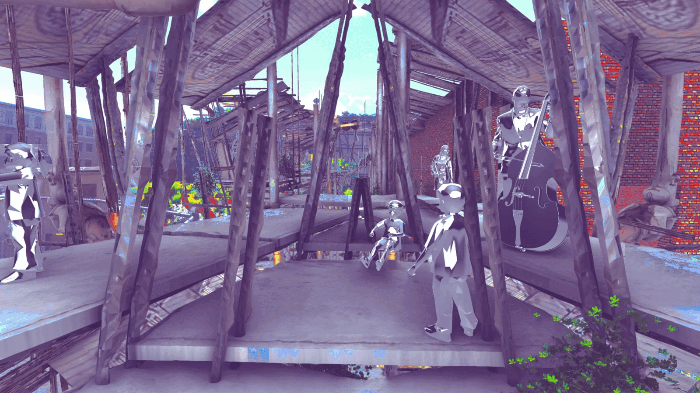
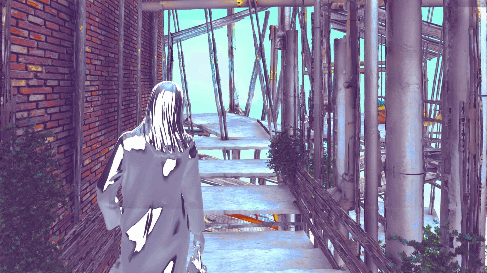
Assembling a Kit
Collecting materials from around the site area that would be within he flood radius to construct the structure.
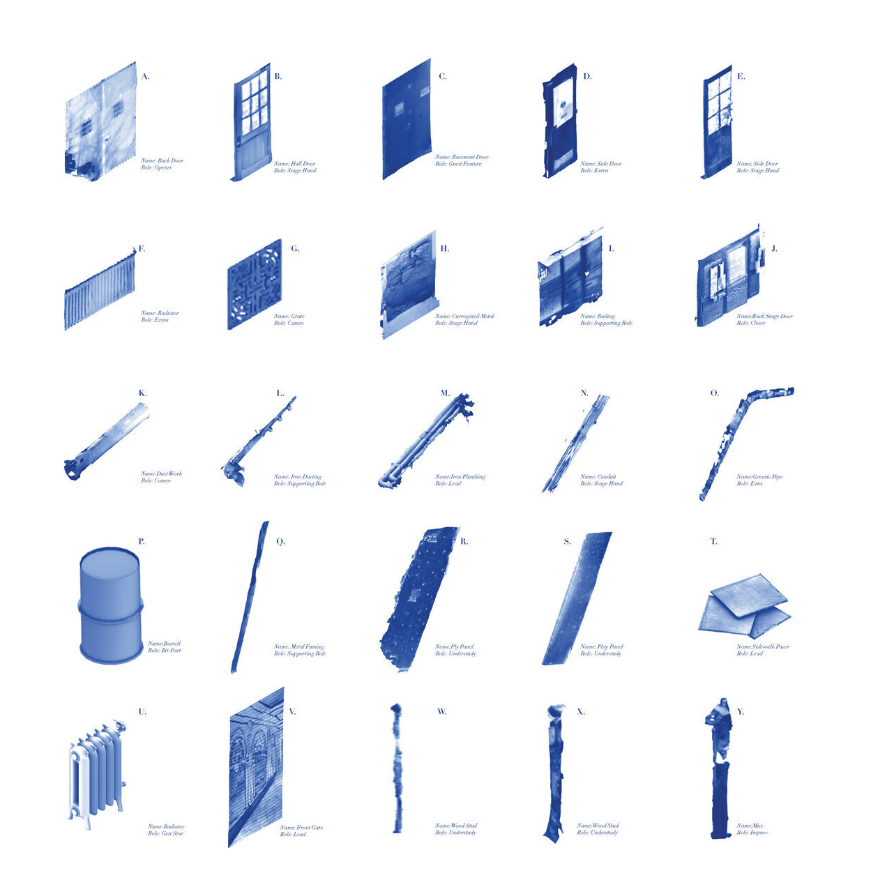
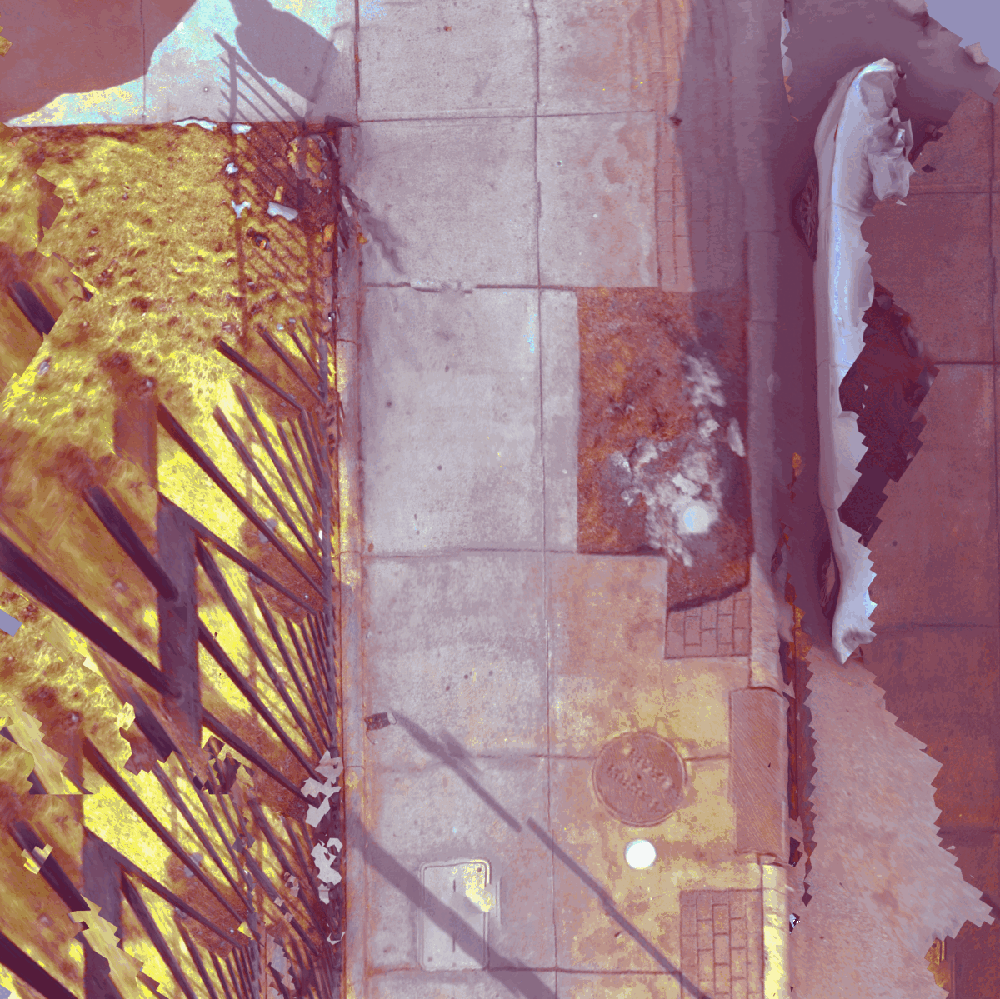
 <
<
Fragment Focus
Examining how a particular fragment could have a social purpose today, but as it degrades and falls apart it becomes a different program for the future.
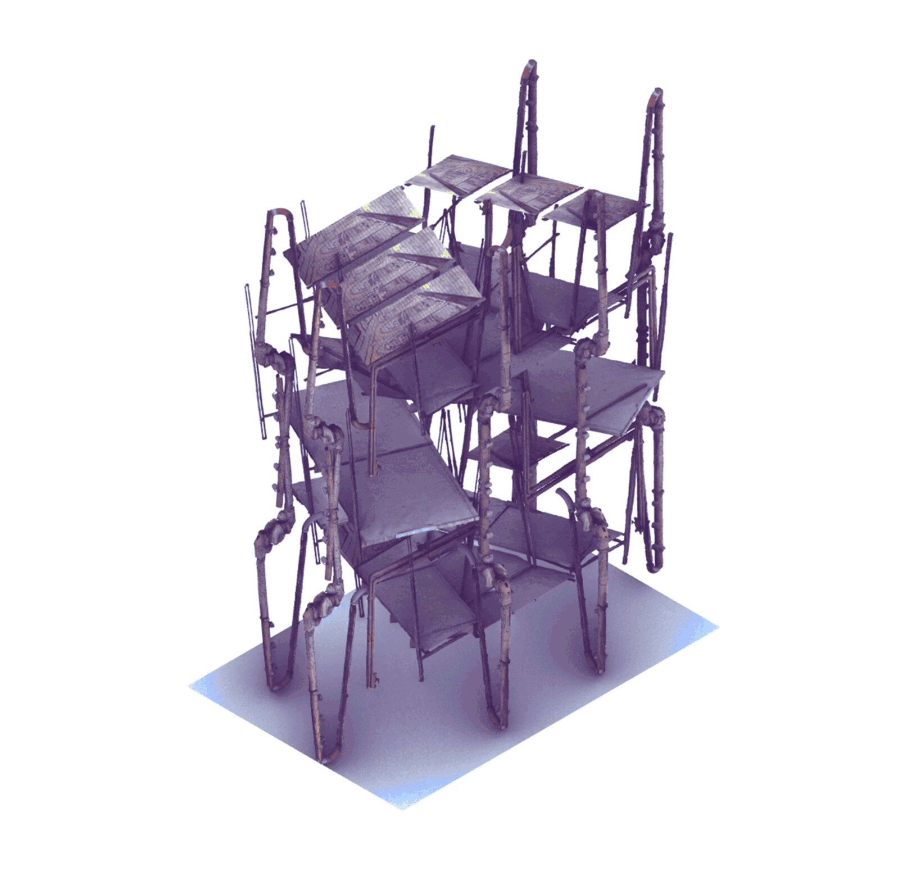
.gif)
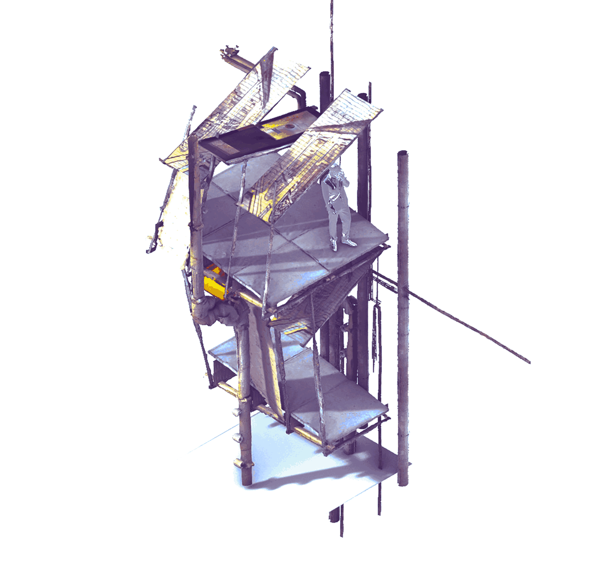
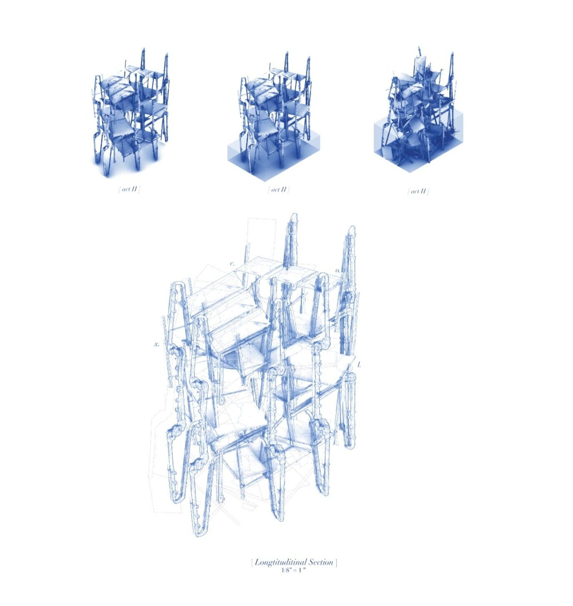
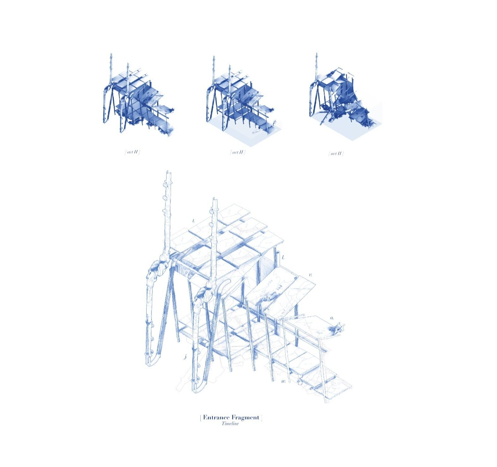
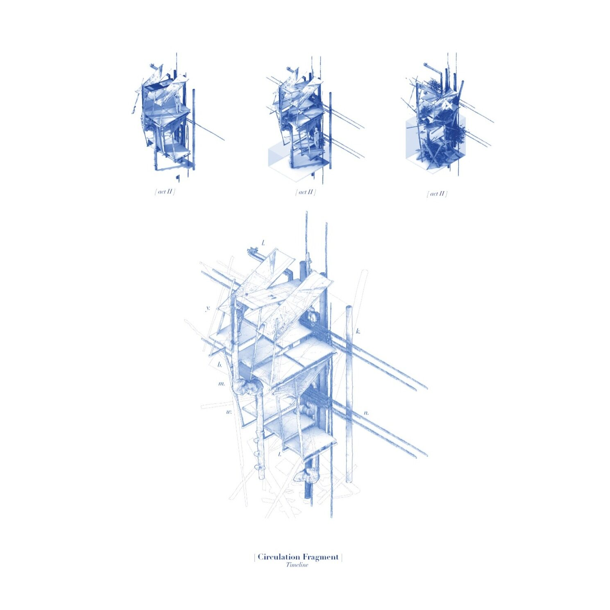